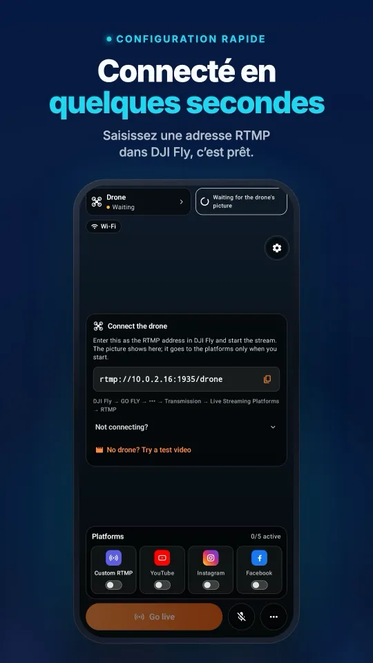
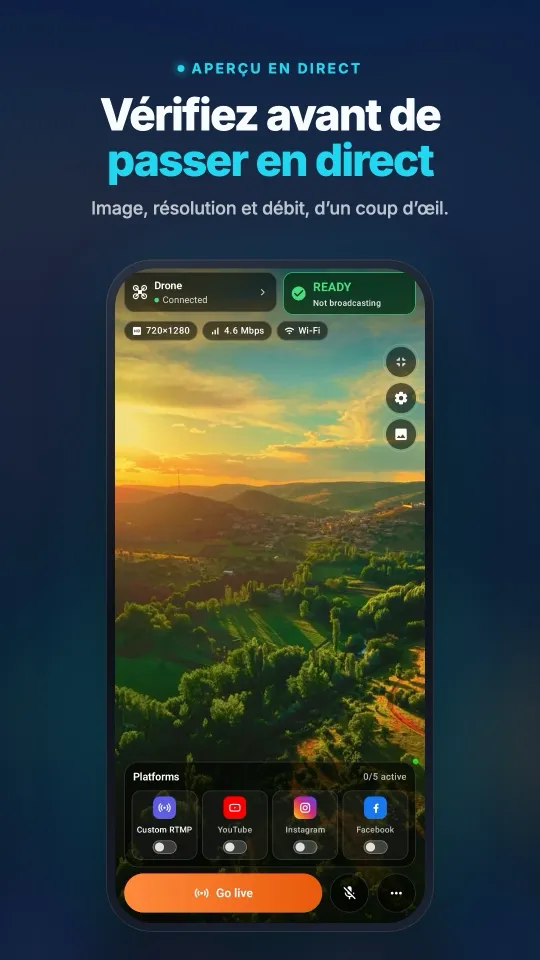
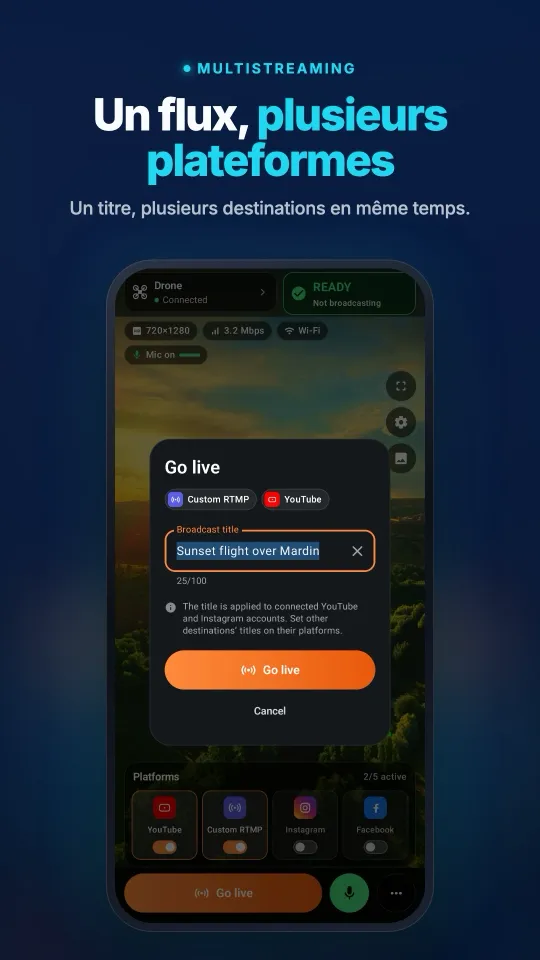
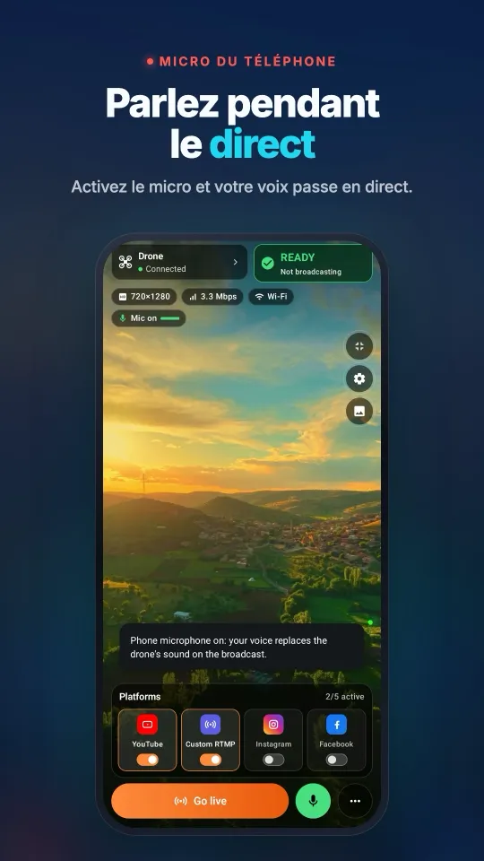
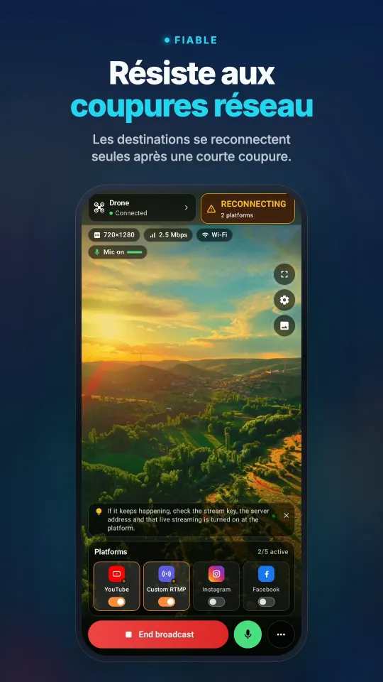

Comment diffuser un DJI Mavic 4 Pro en direct
Votre DJI Mavic 4 Pro peut envoyer l'image RTMP de DJI Fly vers Stream My Drone sur un téléphone séparé ou vers Stream My Drone sur un ordinateur. Le bon point de départ est votre radiocommande : la RC 2 et la RC Pro 2 ont toutes deux un écran, mais pas le même équipement micro. Suivez la méthode ci-dessous pour recevoir l'image, choisir vos destinations et vérifier ce que voient réellement les spectateurs.
DJI Fly réclame un micro sur votre RC 2 et ne lance pas le direct ? Corrigez-le sans acheter de micro →
En bref
- Utilisez la RC 2 ou la RC Pro 2 ; la configuration actuelle du Mavic 4 Pro chez DJI ne cite aucune radiocommande RC-N.
- Un téléphone séparé équipé de Stream My Drone permet de recevoir et de relayer le flux sans ordinateur.
- Le direct RTMP de DJI Fly est une sortie distincte de l'enregistrement haute résolution dans l'appareil.
- Saisissez l'adresse locale de l'application réceptrice dans DJI Fly, et les identifiants des plateformes dans l'application réceptrice.
- Vérifiez le menu RTMP et la demande de microphone avant le décollage, puis contrôlez la page spectateur de la plateforme.
Quelle radiocommande du Mavic 4 Pro peut envoyer le flux ?
Le guide d'appairage des appareils de DJI cite la DJI RC 2 et la DJI RC Pro 2 pour le Mavic 4 Pro. Toutes deux font tourner DJI Fly sur leur écran intégré. Ne reprenez pas une méthode RC-N1, RC-N2 ou RC-N3 venant d'un autre appareil : ce ne sont pas les radiocommandes documentées pour ce modèle.
| Radiocommande | Application de vol | Récepteur pour ce guide |
|---|---|---|
| DJI RC 2 | DJI Fly sur l'écran intégré | Stream My Drone sur un téléphone séparé, ou Stream My Drone sur un ordinateur |
| DJI RC Pro 2 | DJI Fly sur l'écran intégré | Les mêmes méthodes de réception, sur téléphone séparé ou sur ordinateur |
La DJI RC Pro 2 n'est pas la DJI RC Pro. Sa FAQ officielle confirme la présence d'un microphone intégré. Avec la RC 2, prévoyez un microphone externe ; suivez la demande affichée par votre version de DJI Fly avant de lancer un direct.
Vérifier le menu RTMP avant de préparer le direct
Mettez à jour l'appareil, la radiocommande et DJI Fly, appairez l'appareil et passez en vue caméra. Ouvrez GO FLY → ••• → Transmission → Live Streaming Platforms → RTMP. Les noms des menus peuvent varier selon la version et la langue. Si votre firmware ne propose pas le RTMP, l'application réceptrice ne peut pas l'ajouter.
Le guide actuel du live de DJI limite la sortie RTMP de la RC 2 comme de la RC Pro 2 à 720p. Il exige aussi un microphone connecté sur la RC 2 à partir de DJI Fly v1.16.0. Vérifiez les réglages de sortie disponibles sur votre radiocommande ; un écran 1080p ou un réglage d'enregistrement plus élevé sur l'appareil ne lève pas cette limite.
Sur votre téléphoneDe la connexion à DJI Fly jusqu'au direct sur plusieurs plateformes, sur un seul écran.




Mavic 4 Pro sans ordinateur : recevoir sur un téléphone
- Installez Stream My Drone sur un téléphone séparéTéléchargez-le sur Google Play ou sur l'App Store. Gardez DJI Fly ouvert sur votre RC 2 ou RC Pro 2 ; le téléphone recevra et relaiera sa vidéo.
- Placez la radiocommande et le récepteur sur le même réseauUtilisez un réseau Wi-Fi avec accès à Internet. Sur le terrain, le téléphone Android récepteur peut aussi créer le point d'accès. Ouvrez Stream My Drone après avoir choisi le réseau et, sur iPhone, autorisez l'accès au réseau local lorsque c'est demandé. Revérifiez l'adresse affichée si vous changez de réseau.
- Saisissez l'adresse du récepteur dans DJI FlyCopiez l'adresse RTMP locale complète affichée par Stream My Drone. Dans DJI Fly, ouvrez GO FLY → ••• → Transmission → Live Streaming Platforms → RTMP. Suivez les libellés de votre version : un écran qui demande une adresse et une clé dans des champs séparés n'est pas le même qu'un écran qui demande une URL RTMP complète. N'ajoutez pas votre clé YouTube ou Instagram à l'adresse locale du récepteur. Le guide RTMP de DJI Fly détaille le parcours des menus.
- Lancez le flux local et vérifiez le sonDémarrez le direct dans DJI Fly, puis vérifiez qu'une image animée apparaît dans Stream My Drone. Contrôlez le microphone sélectionné sur la radiocommande et écoutez le son sur la plateforme pendant votre test au sol. Une image sans son exploitable est plus facile à diagnostiquer avant le décollage.
- Ajoutez des destinations et publiezConnectez un compte de plateforme lorsque cette option existe, ou saisissez l'URL du serveur et la clé de stream actuelles dans Stream My Drone. Lancez le relais et ouvrez le tableau de bord de la plateforme. Effectuez l'éventuelle étape Go Live séparée, puis vérifiez que la page spectateur fonctionne vraiment.
Le téléphone récepteur est un appareil distinct de la radiocommande. Le relais sur mobile conserve la vidéo entrante telle quelle ; le recadrage de l'aperçu ou un fond flouté ne crée pas un nouveau direct vertical. Sur iPhone, gardez l'application ouverte pendant la configuration ; la poursuite de la réception en arrière-plan dépend du mode Image dans l'image.
Mavic 4 Pro sur Mac ou Windows : production sur ordinateur
Gardez DJI Fly ouvert sur votre RC 2 ou RC Pro 2. Installez Stream My Drone sur votre Mac ou votre PC Windows. L'ordinateur reçoit le flux RTMP de DJI Fly via votre réseau local ; cette configuration n'utilise ni capture HDMI ni connexion webcam USB depuis la radiocommande.
- Copiez l'adresse RTMP locale de l'ordinateurConnectez l'ordinateur et l'appareil qui fait tourner DJI Fly au même réseau. Dans Stream My Drone, copiez l'adresse sous Connecter votre drone.
rtmp://192.168.1.20:1935/dronen'est qu'un exemple : utilisez l'adresse affichée par votre application. - Envoyez le flux et vérifiez la réceptionSaisissez cette adresse locale dans DJI Fly et lancez la diffusion. Si le pare-feu le demande, autorisez l'application à recevoir des connexions sur votre réseau privé. Vérifiez l'aperçu animé avant de configurer une plateforme.
- Choisissez votre sortie et démarrez une destinationChoisissez le format paysage ou une mise en page verticale sur ordinateur, puis ajoutez l'URL du serveur et la clé de la plateforme. Démarrez la sortie, vérifiez que la plateforme la reçoit et effectuez son étape de publication. Avec plusieurs destinations, vérifiez le débit montant total nécessaire avant de les activer ensemble.

Envoyer le direct de votre Mavic 4 Pro vers une plateforme
| Destination | Ce qu'il vous faut | Guide |
|---|---|---|
| YouTube | Le direct activé et une diffusion préparée | Configuration YouTube |
| Un accès à Live Producer et les identifiants RTMPS actuels | Configuration Instagram | |
| Une vidéo en direct préparée, avec son URL de serveur et sa clé | Configuration Facebook | |
| TikTok | L'accès RTMP sur votre compte, ou l'accès à LIVE Studio sur un ordinateur | Configuration TikTok |
L'éligibilité du compte dépend de la plateforme. Aucune des deux applications ne fournit de clé de stream ni ne contourne les conditions d'accès. Pour travailler sur ordinateur avec une application de studio compatible, Stream My Drone propose aussi une caméra virtuelle. Un aperçu local prouve la réception ; une page spectateur qui fonctionne confirme la publication.
Qualité d'enregistrement, prise de vue en portrait et direct
Distinguez trois images : le fichier enregistré dans l'appareil, le retour vidéo de la radiocommande et la vidéo RTMP qui arrive au récepteur. Jugez le direct d'après les dimensions et le débit reçus. Une sortie plus grande sur ordinateur ne peut pas recréer des détails absents de l'image entrante.
Le Mavic 4 Pro peut filmer à la verticale, et DJI décrit les commandes dans son guide du mode portrait. Testez ce que reçoit réellement le récepteur RTMP après un changement d'orientation. Un réglage d'enregistrement vertical, un écran de radiocommande pivoté et un direct en 9:16 sur la plateforme ne se vérifient pas de la même façon.
- Cadrez délibérément. Vérifiez l'image envoyée sur la plateforme. Sur mobile, la mise en page de l'aperçu ne la réencode pas ; sur ordinateur, choisissez le recadrage ou la sortie image entière que vous voulez publier.
- Prévoyez le débit par destination. Une sortie continue à 5 Mbit/s consomme environ 2,25 Go par heure, hors surcharge. Deux sorties de ce type demandent environ 10 Mbit/s d'envoi au total et 4,5 Go par heure.
- Testez au sol. Vérifiez le mouvement, le son et la vraie page spectateur. Gardez le téléphone récepteur près du point d'accès et surveillez sa batterie et sa température pendant les longs directs.
Dépannage du flux en direct du Mavic 4 Pro
- Pas d'option RTMP : vérifiez le modèle de radiocommande et la version logicielle dans DJI Fly. La RC 2 et l'ancienne DJI RC n'ont pas les mêmes fonctions ; changer de récepteur ne change pas les capacités de la radiocommande.
- DJI Fly demande un microphone : avec la RC 2, branchez un microphone compatible et revérifiez son entrée. Avec la RC Pro 2, vérifiez l'entrée sélectionnée et les autorisations du microphone au lieu d'appliquer les instructions de la RC 2.
- La connexion a échoué : utilisez l'adresse IP locale actuelle du récepteur. L'isolation d'un Wi-Fi invité, un pare-feu ou un changement de point d'accès peuvent couper la connexion locale.
localhostdésigne la radiocommande elle-même. - L'aperçu fonctionne, mais le public ne voit rien : vérifiez le relais, les identifiants de la destination et l'éventuelle étape Go Live restante sur la plateforme.
- La réception s'arrête sur iPhone : revenez dans Stream My Drone et vérifiez le mode Image dans l'image. Sans lui, iOS peut suspendre la réception lorsque l'application passe en arrière-plan.
Sources officielles et guides associés
Vérifié le 25 octobre 2026 : guide d'appairage des appareils de DJI pour le choix des radiocommandes ; FAQ de la DJI RC Pro 2 pour le microphone ; guide du live de DJI Fly pour les limites du RTMP ; et mode portrait de DJI pour les commandes de prise de vue verticale. Le firmware et les menus disponibles peuvent changer ; vérifiez votre propre combinaison.
Pour la génération précédente, lisez le guide de diffusion des Mavic 3, Classic et Pro. Pour envoyer le même flux vers plusieurs services, poursuivez avec le multistreaming d'un drone DJI.
Questions
Peut-on diffuser un Mavic 4 Pro en direct sans ordinateur ?
Oui : utilisez DJI Fly sur la RC 2 ou la RC Pro 2 et recevez son flux RTMP dans Stream My Drone sur un téléphone séparé, connecté au même réseau local. Configurez les destinations dans l'application mobile et vérifiez la publication sur chaque plateforme.
Puis-je utiliser une configuration RC-N3 avec téléphone pour le Mavic 4 Pro ?
Le guide d'appairage actuel de DJI cite la RC 2 et la RC Pro 2 pour cet appareil. Ce guide utilise ces radiocommandes à écran prises en charge, plutôt que de supposer une compatibilité RC-N reprise d'un autre modèle.
Les deux radiocommandes ont-elles besoin d'un microphone externe ?
La RC Pro 2 a un microphone intégré. Pour la RC 2, DJI exige un microphone connecté à partir de Fly v1.16.0. Testez le son et suivez la demande affichée par votre radiocommande avant le vol.
Un enregistrement en 6K signifie-t-il un direct en 6K ?
Non. Le fichier enregistré par la caméra est distinct de la sortie RTMP de DJI Fly. Vérifiez l'entrée réelle dans l'application réceptrice et le flux reçu par la plateforme.
Où saisir mes identifiants YouTube ou Instagram ?
Dans les réglages de destination de Stream My Drone, sur téléphone ou sur ordinateur. DJI Fly reçoit l'adresse RTMP locale affichée par cette application.
Pivoter l'écran de la radiocommande garantit-il un direct vertical ?
Vérifiez l'image qui arrive au récepteur et la page spectateur de la plateforme. L'écran de la radiocommande, l'orientation d'enregistrement de la caméra et le format de la vidéo sortante sont indépendants. Stream My Drone sur ordinateur peut convertir la sortie en mise en page verticale.
Diffusez votre drone en direct depuis votre téléphone
Stream My Drone pour Android et iPhone reçoit l'image de DJI Fly et l'envoie vers YouTube, Instagram, Facebook, TikTok, Twitch, Kick ou votre propre serveur, à plusieurs en même temps. Achat unique, sans abonnement.
App Mac et Windows gratuite →Comment fonctionne l'application →

Autres guides
La DJI RC 2 refuse le direct sans micro ? Corriger “No built-in mic in current device”
DJI Fly 1.16 ne lance plus le direct de la RC 2 sans micro. Pourquoi, ce qui marche (micro USB-C, AirPods) et une solution sans matériel avec un téléphone Android.
Comment diffuser un DJI Flip en direct
Diffusez le DJI Flip en direct avec la RC 2, la RC-N3 ou la RC-N2 : RTMP sur téléphone et ordinateur, contrôle à la paume ou par téléphone, cadrage vertical et plateformes.
Comment diffuser un DJI Lito X1 en direct
Diffusez un DJI Lito X1 en direct avec la RC 2, la RC-N3 ou la RC-N2 : réglages RTMP de DJI Fly, méthodes téléphone et ordinateur, plateformes et dépannage concret.
Comment diffuser un DJI Lito 1 en direct
Diffusez un DJI Lito 1 en direct avec la RC 2, la RC-N3 ou la RC-N2 : réglages RTMP de DJI Fly, méthodes téléphone et ordinateur, plateformes et dépannage concret.
Comment diffuser un DJI Air 3S en direct
Diffusez un DJI Air 3S en direct sur YouTube, Instagram ou Facebook : choix de la radiocommande, RTMP de DJI Fly vers un téléphone ou un ordinateur et contrôle de l'image.
Comment diffuser un DJI Air 3 en direct
Diffusez un DJI Air 3 en direct sur YouTube, Instagram ou Facebook : choix de la radiocommande, RTMP de DJI Fly vers un téléphone ou un ordinateur et contrôle de l'image.
Comment diffuser un DJI Mavic 3, Classic ou Pro en direct
Diffusez un DJI Mavic 3, Classic ou Pro en direct avec la RC-N1 ou la RC Pro : pourquoi la DJI RC ne diffuse pas, réception sur téléphone, RTMP sur ordinateur et qualité.
Comment diffuser un DJI Mini 3 Pro en direct
Diffusez un DJI Mini 3 Pro en direct avec la RC-N1, DJI Fly sur votre téléphone et Stream My Drone sur ordinateur. Pourquoi la DJI RC d'origine ne permet pas ce RTMP.
Comment diffuser un DJI Mini 3 en direct
Configurez la diffusion en direct du DJI Mini 3 avec la RC-N1 et DJI Fly vers Stream My Drone sur ordinateur : limites de la DJI RC, retour vidéo 720p et publication.
Comment diffuser un DJI Mini 5 Pro en direct
Diffusez un DJI Mini 5 Pro en direct avec la RC 2 ou la RC-N3 : réglez le RTMP de DJI Fly, sur téléphone ou ordinateur, et envoyez le flux vers YouTube, Instagram ou Facebook.
Comment diffuser un DJI Mini 4 Pro en direct
Diffusez un DJI Mini 4 Pro en direct avec la RC 2 ou la RC-N2 : configuration sur téléphone et ordinateur, réglages RTMP de DJI Fly, microphone requis et vérifications.
Repérez et comptez les animaux en direct depuis votre drone DJI
Stream My Drone repère chèvres, moutons, vaches, chevaux, ânes et volailles dans l'image en direct de votre drone, les marque dans le live et les compte, sur votre ordinateur.
Direct RTMP avec DJI Fly : la configuration complète
Configurer le direct RTMP dans DJI Fly : où trouver le réglage, quelle adresse saisir, comment relier radiocommande et ordinateur au même réseau, et que faire en cas de problème.
Pourquoi DJI Fly ne peut pas diffuser en direct sur Instagram (et la solution)
DJI Fly n'a pas d'option Instagram et son client RTMP ne gère pas le RTMPS chiffré qu'exige Instagram. Pourquoi, et comment passer quand même en live avec un drone DJI.
Transformez votre drone DJI en webcam pour votre ordinateur
Transformez votre drone DJI en webcam pour TikTok LIVE Studio, OBS, Zoom, Google Meet ou Teams grâce à la caméra virtuelle de Stream My Drone. Installation, idées et dépannage.
Comment diffuser un DJI Neo en direct
Comment diffuser un DJI Neo en direct : quel mode de pilotage fonctionne (téléphone, RC-N3, casque), le RTMP dans DJI Fly, et le live sur Instagram, TikTok ou YouTube.
Comment diffuser un DJI Avata 2 en direct
Comment diffuser en direct les images FPV d'un DJI Avata 2 : partagez la vue des Goggles 3 avec DJI Fly sur votre téléphone, diffusez en RTMP et passez en live sur Instagram ou TikTok.
Diffusez votre caméra DJI Osmo en direct sur Instagram, TikTok et ailleurs
DJI Mimo peut diffuser les caméras Osmo Action, Osmo Pocket et Osmo 360 en RTMP. Envoyez ce flux à Stream My Drone pour passer en live sur Instagram, TikTok et YouTube à la fois.
Comment diffuser une Osmo Pocket 3 en direct sur Instagram et TikTok
Comment diffuser une DJI Osmo Pocket 3 en direct en RTMP depuis DJI Mimo vers Instagram, TikTok et YouTube à la fois, et l'utiliser comme webcam sans fil avec Stream My Drone.
Comment diffuser une caméra Osmo Action en direct sur Instagram et TikTok
Diffusez une DJI Osmo Action 6, 5 Pro, 4 ou 3 en direct en RTMP depuis DJI Mimo vers Instagram, TikTok, YouTube et Twitch à la fois avec Stream My Drone. Configuration et réglages.
Comment passer en live sur TikTok avec un drone DJI
Diffusez un drone DJI en direct sur TikTok depuis DJI Fly : avec une clé de stream TikTok, ou sans clé grâce à TikTok LIVE Studio et une caméra virtuelle. Réglages et dépannage.
Comment passer en direct sur Instagram avec un drone DJI
Passez en direct sur Instagram avec un drone DJI : obtenez l'URL et la clé de stream sur instagram.com, envoyez le RTMP de DJI Fly via Stream My Drone, puis lancez le live.
Comment diffuser un drone DJI en direct sur YouTube
Diffusez un drone DJI en direct sur YouTube : activez le direct, copiez la clé de flux dans YouTube Studio et envoyez le RTMP de DJI Fly via Stream My Drone. Réglages et conseils.
Comment passer en direct sur Facebook avec un drone DJI
Diffusez un drone DJI en direct sur Facebook : obtenez l'URL du serveur RTMPS et la clé de flux dans Live Producer, envoyez le flux de DJI Fly via Stream My Drone et lancez le live.
Comment streamer un drone DJI sur Twitch
Diffusez un drone DJI en direct sur Twitch : copiez votre clé de stream dans le tableau de bord des créateurs, ajoutez Twitch en RTMP personnalisé dans Stream My Drone et lancez-vous.
Comment streamer un drone DJI sur Kick
Diffusez un drone DJI en direct sur Kick : copiez l'URL et la clé de stream depuis le tableau de bord Kick, ajoutez-les en RTMP personnalisé dans Stream My Drone et lancez le live.
Diffuser un drone DJI sur plusieurs plateformes à la fois
Envoyez un même direct de drone DJI vers TikTok, Instagram, YouTube, Facebook, Twitch et Kick en même temps avec Stream My Drone : gratuit, local, sans service de rediffusion.
Stream My Drone ou Restream : lequel choisir pour votre drone ?
Diffuser un drone DJI sur plusieurs plateformes : relais cloud Restream ou Stream My Drone sur votre ordinateur ? Coût, filigrane, Instagram, vidéo verticale et qui l'emporte quand.
Diffuser un drone DJI sans configurer NGINX ni OBS
La méthode habituelle pour faire entrer DJI Fly dans OBS passe par un serveur RTMP NGINX, un fichier de config et une source média. Ce que cela implique, et comment s'en passer.